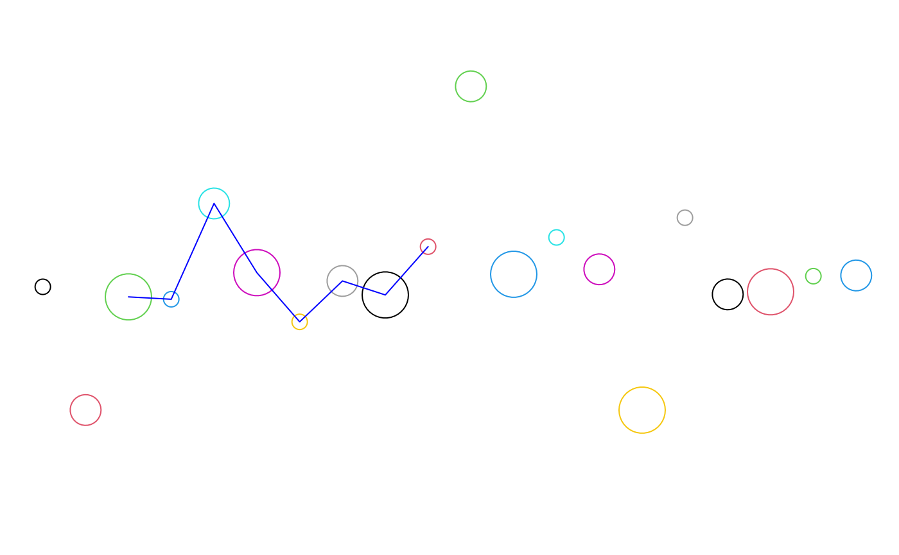
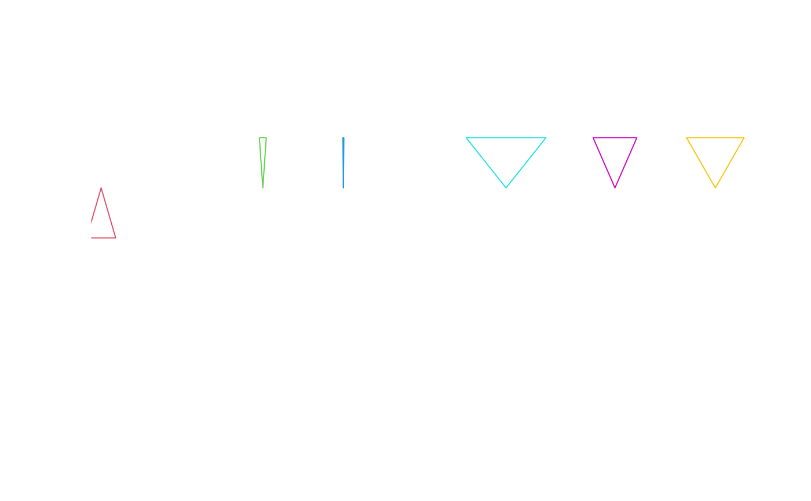
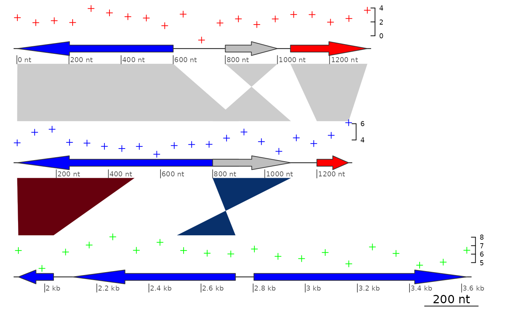
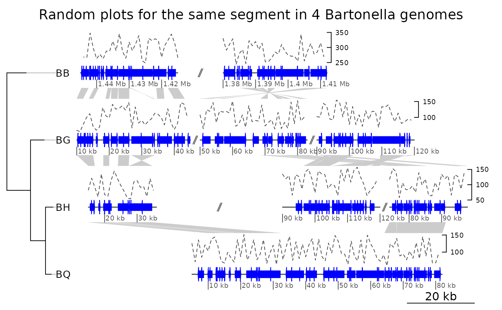

seg_plot class and methods
seg_plot.RdA seg_plot is an object to plot data associated with a dna_seg object. It is
a list with mandatory and optional arguments. The main arguments are func,
which is a function that returns a grob or a gList, and args, which
are arguments to be passed to this function.
Arguments
- func
A function that returns a
grobor agListlist ofgrobs. User-defined functions can be used, but ready-made functions from thegridpackage can be used as well.- args
A list,
NULLby default. The arguments that will be passed to the function. It is recommended that all arguments are named.- xargs
A character vector containing the names of the arguments from
argsthat define the x-axis. Used, among others, by the function trim.seg_plot. By default, gives the most common x-defining arguments of thegridfunctions (x,x0,x1,x2,v).- yargs
A character vector containing the names of the arguments from
argsthat define the y-axis. Used when plotting the graphs to define a sensibleylimif not defined. By default, gives the most common y-defining arguments of the grid functions (y,y0,y1,y2,h).- ylim
A numeric vector of length 2, defining the range of the plot when drawn with plot_gene_map. Derived from
yargsif not set.- seg_plot
In
as.seg_plot, a list object to convert toseg_plot. The list must consist of named elements matching the above arguments, withfuncandargsbeing mandatory. See details below.In
is.seg_plot, an object to test.
Details
A seg_plot object is an object describing how to plot data
associated to a dna_seg. It is a list composed of a function,
arguments to pass to this function, two arguments to define which of
those define x and y, and an eventual ylim to limit the
plotting to a certain range.
Internally, the seg_plot function calls as.seg_plot using a list with
the arguments of seg_plot as named elements. In other words, the input to
as.seg_plot should be a list with at least func and args as named
elements, with xargs, yargs, and ylim as optional named elements.
The function func should return a grob object, or a gList list of
grobs. The predefined functions of grid can be used, such as linesGrob,
pointsGrob, segmentsGrob, textGrob, or polygonGrob. Alternatively,
user-defined functions can be used instead.
The arguments in args should correspond to arguments passed to
func. For example, if func = pointsGrob, args
could contain the elements x = 10:1, y = 1:10. It will
often also contain a gp element, the result of a call to the
gpar function, to control graphical aspects of the plot
such as color, fill, line width and style, fonts, etc.
is.seg_plot returns TRUE if the object tested is a
seg_plot object.
Examples
## Using the existing pointsGrob
x <- 1:20
y <- rnorm(20)
sp <- seg_plot(func = pointsGrob,
args = list(x = x, y = y, gp = gpar(col = 1:20, cex = 1:3)))
is.seg_plot(sp)
#> [1] TRUE
## Function seg_plot(...) is identical to as.seg_plot(list(...))
sp2 <- as.seg_plot(list(func = pointsGrob,
args = list(x = x, y = y,
gp = gpar(col = 1:20, cex = 1:3))))
identical(sp, sp2)
#> [1] FALSE
## For the show, plot the obtained result
grb <- do.call(sp$func, sp$args)
## Trim the seg_plot
sp_trim <- trim(sp, c(3, 10))
## Changing color and function "on the fly"
sp_trim$args$gp$col <- "blue"
sp_trim$func <- linesGrob
grb_trim <- do.call(sp_trim$func, sp_trim$args)
## Now plot
plot.new()
pushViewport(viewport(xscale = c(0, 21), yscale = c(-4, 4)))
grid.draw(grb)
grid.draw(grb_trim)

## Using home-made function
triangleGrob <- function(start, end, strand, col, ...) {
x <- c(start, (start+end)/2, end)
y1 <- 0.5 + 0.4*strand
y <- c(y1, rep(0.5, length(y1)), y1)
polygonGrob(x, y, gp = gpar(col = col), default.units = "native",
id = rep(1:7, 3))
}
start <- seq(1, 19, by = 3) + rnorm(7) / 3
end <- start + 1 + rnorm(7)
strand <- sign(rnorm(7))
sp_tr <- seg_plot(func = triangleGrob,
args = list(start = start, end = end, strand = strand,
col = 1:length(start)),
xargs = c("start", "end"))
grb_tr <- do.call(sp_tr$func, sp_tr$args)
plot.new()
pushViewport(viewport(xscale = c(1, 22), yscale = c(-2, 2)))
grid.draw(grb_tr)

## Trim
sp_tr_trim <- trim(sp_tr, xlim = c(5, 15))
str(sp_tr_trim)
#> List of 5
#> $ func :function (start, end, strand, col, ...)
#> $ args :List of 5
#> ..$ start : num [1:2] 7.89 9.88
#> ..$ end : num [1:2] 7.72 9.9
#> ..$ strand : num [1:2] 1 1
#> ..$ col : int [1:2] 3 4
#> ..$ default.units: chr "native"
#> $ xargs: chr [1:2] "start" "end"
#> $ yargs: chr [1:5] "y" "y0" "y1" "y2" ...
#> $ ylim : NULL
#> - attr(*, "class")= chr [1:2] "seg_plot" "list"
## If the correct xargs are not indicated, trimming won't work
sp_tr$xargs <- c("x")
sp_tr_trim2 <- trim(sp_tr, xlim = c(5, 15))
identical(sp_tr_trim, sp_tr_trim2)
#> [1] FALSE
y1 <- convertY(grobY(grb_tr, "south"), "native")
y2 <- convertY(grobY(grb_tr, "north"), "native")
heightDetails(grb)
#> [1] 7.77856344394176inches
grb
#> points[GRID.points.54]
## Applying it to plot_gene_maps
data(three_genes)
dna_segs <- three_genes$dna_segs
comparisons <- three_genes$comparisons
## Build data to plot
xs <- lapply(dna_segs, range)
colors <- c("red", "blue", "green")
seg_plots <- list()
for (i in 1:length(xs)) {
x <- seq(xs[[i]][1], xs[[i]][2], length = 20)
seg_plots[[i]] <- seg_plot(func = pointsGrob,
args = list(x = x, y = rnorm(20) + 2 * i,
default.units = "native", pch = 3,
gp = gpar(col = colors[i], cex = 0.5)))
}
plot_gene_map(dna_segs, comparisons,
seg_plots = seg_plots,
seg_plot_height = 0.5,
seg_plot_height_unit = "inches",
dna_seg_scale = TRUE)

## A more complicated example
data(barto)
tree <- ade4::newick2phylog("(BB:2.5,(BG:1.8,(BH:1,BQ:0.8):1.9):3);")
## Showing several subsegments per genome
xlims2 <- list(c(1445000, 1415000, 1380000, 1412000),
c( 10000, 45000, 50000, 83000, 90000, 120000),
c( 15000, 36000, 90000, 120000, 74000, 98000),
c( 5000, 82000))
## Adding fake data in 1kb windows
seg_plots <- lapply(barto$dna_segs, function(ds) {
x <- seq(1, range(ds)[2], by = 1000)
y <- jitter(seq(100, 300, length = length(x)), amount = 50)
seg_plot(func = linesGrob,
args = list(x = x, y = y, gp = gpar(col = grey(0.3), lty = 2)))
})
plot_gene_map(barto$dna_segs, barto$comparisons, tree = tree,
seg_plots = seg_plots,
seg_plot_height = 0.5,
seg_plot_height_unit = "inches",
xlims = xlims2,
limit_to_longest_dna_seg = FALSE,
dna_seg_scale = TRUE,
main = "Random plots for the same segment in 4 Bartonella genomes")
